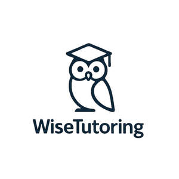

Trade Mark Journal No.2025/048 28 November 2025
UK00004295318 15 November 2025 (41)

- Class 41
- Tutoring; Providing tutoring in the field of geometry; Tutoring at cram schools; Providing of training, teaching and tuition; Teaching services; School services for the teaching of languages; Teacher training services; Educational services for teaching keyboard writing; Sports tuition, coaching and instruction; Educational services for teaching manual writing; Computer assisted teaching services; Teaching in the field of remedial reading; School courses relating to study assistance; School services for the teaching of art; Educational and teaching services; Providing tutorial sessions in the field of mathematics; Language teaching services; Arranging and conducting of day school courses for adults; Education, teaching and training; Services for arranging teaching programmes; Pre-school teaching; Teaching academy services; Providing computer assisted courses of instruction; Educational services for providing courses of instruction; Education academy services for teaching languages; Education academy services for teaching acting; Remedial tuition; Teaching; Arranging for students to participate in educational courses; Educational services for teaching acting; Arranging of courses of instruction; Education academy services for teaching construction drafting; Teaching services for communication skills; Educational services for the teaching of languages; Arranging of classes; Teaching services relating to business assistance; Education services for imparting language teaching methods; Providing online courses of instruction; School services for the teaching of construction draughting; Educational services for providing courses of education; Services for teaching languages; Remedial tuition in language; Arranging and conducting of educational courses; Arranging teaching programmes; Arranging and conducting of in-person educational forums; Arranging of training courses; Education and instruction services; Providing courses of instruction at college level; Providing educational entertainment services for children in after-school centers; Arranging and conducting of training courses; Providing courses of instruction; Arranging and conducting of soccer training programs; Providing computer-delivered educational testing and assessments; Arrangement of training courses in teaching institutes; Arranging and conducting of classes; Conducting distance learning instruction at the college level; Conducting instructional courses; Educational services relating to the teaching of french; Training or education services in the field of life coaching; Business mentoring services; Arranging and conducting of youth soccer training programs; Educational establishments providing courses of instruction (Services of -); Academic mentoring of school age children; Computer education training services; Computer assisted education services; Arranging technical instruction courses; Instructional and training services; Arranging professional workshop and training courses; Perceptual teaching services; Coaching services; Providing courses of training; Educational services for teaching transcription techniques; Conducting of classes; Teaching by correspondence courses; Providing online training seminars; Conducting classes in nutrition; Career counseling [education]; Training and education services; Education and training services; Conducting distance learning instruction at the graduate level; Instruction in the writing of computer programs; Teaching assessments for counteracting learning difficulties; Career counselling [training and education advice]; Teaching at elementary schools; Conducting of instructional, educational and training courses for young people and adults; Computer assisted training services; School services; Conducting of educational courses; Teaching of diet education; Distance learning services provided online; Engineering training college services; Providing courses of instruction at high school level; Conducting of educational courses in science; Workshops (Arranging and conducting of -) [training]; Arranging and conducting of workshops [training]; Arranging and conducting of training workshops; Courses for the development of consulting skills; Education academy services for teaching art history; Provision of instruction courses in finance; Physical-education services; Music tuition by correspondence courses; Educational services provided by a school; Correspondence school services; Providing courses of instruction at post-graduate level; Perceptual tuition services; Provision of educational entertainment services for children in after school centers; Tuition; Nursery school services [educational]; Conducting distance learning instruction at the university level; Educational services relating to the writing of computer programs; Medical training and teaching; Career counselling relating to education and training; Online education services; Language teaching; Career counselling and coaching; Education services for imparting data processing teaching methods; Providing continuing dental education courses; Providing of education; Conducting training courses relating to nutrition online; Kindergarten services [education or entertainment]; Remedial tuition in speech; Services of schools [education]; Arranging and conducting of lectures for training purposes; Career advisory services (education or training advice); Providing continuing nursing education courses; Conducting fitness classes; Arranging for students to participate in educational activities; Linguistic education and training services; University education services; Vocational education and training services; Conducting of educational courses in engineering; Education and training consultancy; Arranging and conducting of educational seminars; Training services for nannies; Tuition in gymnastics; Educational and training services; Education and instruction.
Wisetutoring ltd